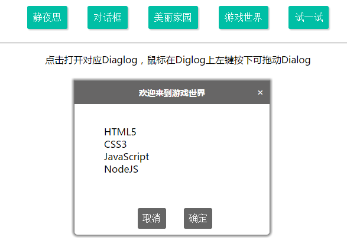
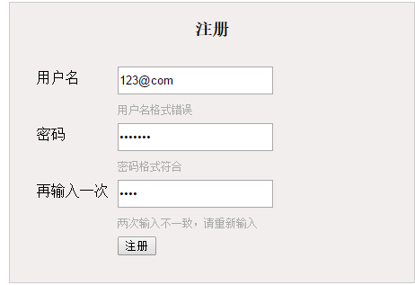
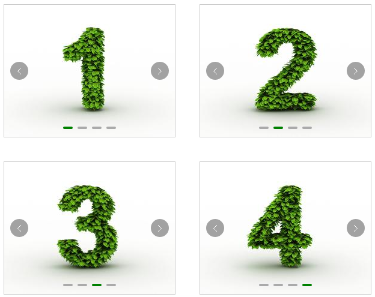
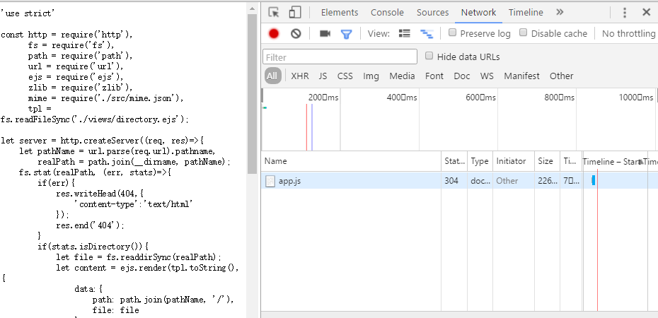
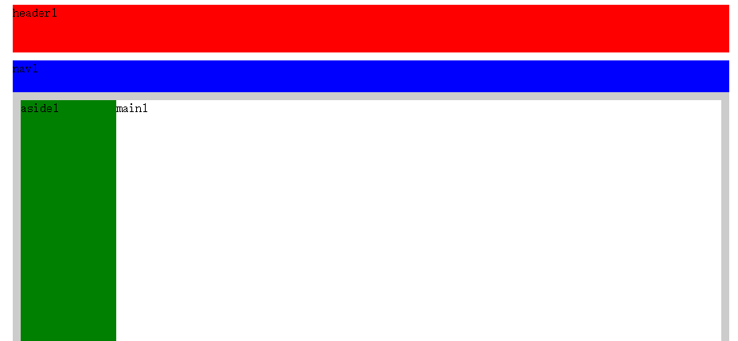
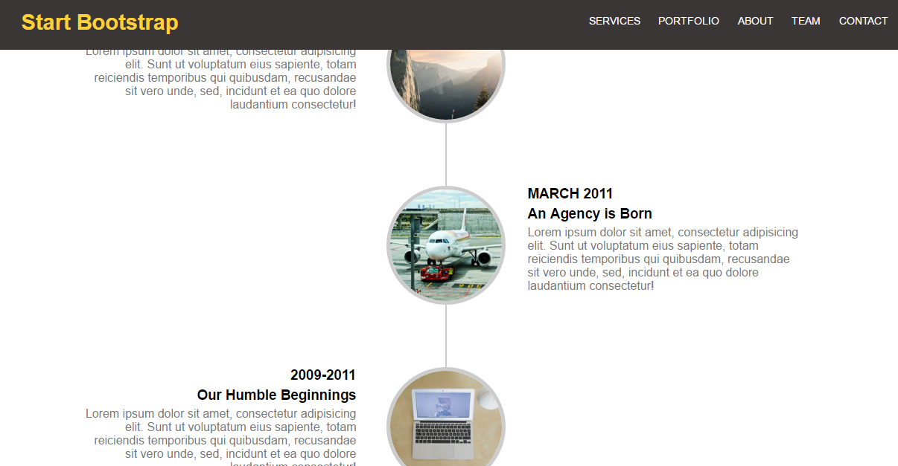

-
技能清单
- 基础
- 能熟练使用 HTML5 和 CSS3 编写符合 W3C 规范的页面，掌握浮动、定位、盒模型、BFC 等核心概念以及常见的布局方式。
- 熟悉原生 JavaScript，掌握事件模型、DOM 操作、Ajax、闭包、原型链、继承等相关概念的原理和使用方法
- 能使用原生 JavaScript 根据需求编写类库组件
- 进阶
- 熟悉模块化与面向对象的方式编程，能使用 Require.js 进行模块化开发
- 熟悉Git、Atom、Sublime等前端相关工具的使用。能熟练解决代码冲突等问题
- 能熟练使用 jQuery 进行开发，实现常见的页面效果
- 熟悉 Node.js 平台，能使用 Express 框架与 MongoDB 数据库实现快速开发
- 工具
- 熟练使用 Chrome 开发者工具调试和辅助开发
- 熟悉HTTP协议，对缓存机制有一定程度的了解，了解TCP/IP的基本工作原理。
- 其他
- 了解Java、C++、PHP等编程语言，熟悉Linux基本操作。可对服务器进行简单配置
- 能流畅阅读英语文档
- 能通过文档、书籍及视频快速获取新技能并上手实践，熟练使用 Google 等搜索引擎解决学习和工作中遇到的问题
-
项目经验
- 饥人谷前端作品库 后端负责人 2016.04.22 - 2016.05.27
- 与前端开发人员制定接口，在Node平台，使用Express框架搭建整体框架
- 根据需求完成个人管理页整页后台逻辑，并按需求添加新特性
- 整站数据mock和接口测试， 与前端人员合作完成部分 ejs 模板
- 成果
- 了解并掌握了完整项目的开发流程
- 熟练掌握了 git 分支操作和冲突管理相关的技能
- 熟练使用Node.js、Express 框架和 MongoDB，可熟练在Node平台进行开发。
- 磨砺了与团队成员沟通的技能
- 提高了迅速定位错误并及时除错的能力，深刻明白了测试的难度及其重要性。
教育背景及经历
- 西安电子科技大学 自动化专业 本科
- 校级三等奖学金 三次 TOP30%
- 校科协计算机部“最佳新人”奖
一年里成功帮助60余名同学解决了各自电脑的软硬件问题
- 杭州电子科技大学自动化学院 硕士
- 多旋翼无人机协会 主要负责人
-
作品列表
- 有趣的对话框 Code Demo
- 
- 主要使用prototype实现了继承，利用浮动、定位
- 等技术。可在同一页面打开多个对话框,
- 自由拖动对话框，并且可自定义对话框的显示方式和内容。
- 达到了代码复用的效果
- Tab切换 Code Demo
- 在同一个页面实现多次Tab切换，
- 相互之间不会有影响，
- 主要利用了this指向其直接调用者的特性
- 原生JS封装一个Ajax实现表单验证 Code Demo
- 
- 使用PHP模拟后台发数据，对用户名进行验证
- 使用正则表达式验证用户名、密码的合法性
- 封装Ajax请求PHP文件，验证用户名是否注册过
- 单页多轮播 Code Demo
- 
- 可在单个页面实现多个轮播
- 正序播放、反序播放、无缝播放
- 封装为一个jQuery插件
- 实现代码复用
- 原生静态资源服务器 Code
- 
- 使用原生NodeJS，不借助第三方包，
- 利用Node自带的http、fs、path、url、zlib等模块
- 配合Ejs模板，实现静态资源服务器的功能。
- 可利用浏览器查看并读取本地文件（夹），
- 并可对相关文件进行压缩和缓存，扩展性极好，
- 达到了模拟Expres框架的最基本效果
- stickUp插件 Code Demo
- 
- 可以将页面上的任何元素“固定”到页面的顶部
- 自动检测固定元素和释放固定元素的时机
- 解决了元素固定时常见的“闪跳”问题
- 达到了无缝stick的效果
- 仿Start Bootstrap Agency主题单页Code Demo
- 
- 合理运用HTML语义化标签
- 利用定位、浮动等特性
- 实现了多栏布局、时间轴等布局样式